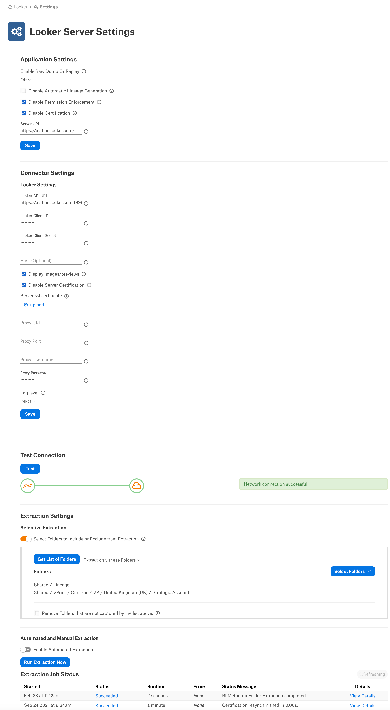

Looker Connector: Install and Configure¶
Alation Cloud Service Applies to Alation Cloud Service instances of Alation
Customer Managed Applies to customer-managed instances of Alation
Follow these steps to perform the necessary configuration for the Looker connector on the Looker side and in Alation.
Authentication Requirements¶
Looker application registration credentials
Looker Client ID and Client Secret
Looker Setup and Authentication¶
To access the Looker content and APIs, a Looker admin needs to enable Client ID and Client Secret access in the Looker Admin Portal:
Log in to Looker.
Navigate to the Admin Portal as shown below and choose users:
Create a new User to be used as a Service ID for integration needs, by clicking the Add Users button:
Enter an Email ID for the user and provide the appropriate roles and groups. The role must be Admin and the group assigned must have admin access:
Click the Add Users button.
Once the user is added, edit the user by clicking the Edit button for this user. The following screen will be displayed. Click Edit Keys:
Click New API3 Key button to generate a Client ID and Client Secret:
Note down the key and the secret as they are needed to configure the Looker connector in Alation.
Alation Setup and Authentication¶
STEP 1: Install the Connector¶
Important
Installation of an OCF connector requires Alation Connector Manager to be installed as a prerequisite.
If this has not been done on your instance, install Alation Connector Manager using the steps in: Install Alation Connector Manager.
Make sure that the OCF connector Zip file that you received from Alation is available on your local machine.
Install the connector on the Connectors Dashboard page: refer to Manage Connector Dashboard.
STEP 2: Create and Configure a New BI Server Source¶
Add a New BI Server Source¶
Log in to the Alation instance and add a new BI Server source: Apps > Sources > Add > BI Server. The Register a Business Intelligence Server screen will open.
On this screen, from the Select a Business Intelligence Server type list, select the Looker connector name and enter a Title and a Description:
Click Add. You will be navigated to your BI Server source Settings page.
Configure the Looker BI Source¶
Note
This section describes configuring settings for credentials and connection information stored in the Alation database. If your organization has configured Azure KeyVault or AWS Secrets Manager to hold such information, the user interface for the General Settings page will change to include the following icons to the right of most options:

{kind=link}
{kind=link}
{kind=link}
{kind=link}
{kind=link}
{kind=link}
By default, the database icon is selected, as shown. In the vault case, instead of the actual credential information, you enter the ID of the secret. See Configure Secrets for OCF Connector Settings for details.
Perform the configuration on the Settings page.

Specify Application Settings:
Parameter |
Description |
|---|---|
Disable Hard Sync |
Leave this checkbox unselected. Selecting it will disable synchronization of BI objects between Alation and Looker. Note This is not applicable from version 2021.2 |
Disable Automatic Lineage Generation |
Select the Disable Automatic Lineage Generation checkbox to skip the creation of automatic Lineage after extraction. When automatic Lineage generation is disabled, during extraction Alation does not calculate Lineage data for this BI source. For more information, see Automatic Lineage Generation FAQ. Note This is applicable from version 2021.3 |
Disable Permission Enforcement |
Leave this checkbox selected. Permission enforcement is not supported between Looker and Alation. |
Disable Certification |
Leave this checkbox selected. Certification of BI objects in Looker from Alation is not supported. |
Server URI |
Enter the server URI used to access Looker. |
Click Save to save the information you have entered.
Specify Connector Settings:
Parameter
Description
Looker API URL
Enter the API URL to access Looker APIs. Default URL is
https://<Looker URI>:19999/Looker Client ID
Enter the Looker Client ID
Looker Client Secret
Enter the Looker Client Secret
Host
Provide the proxy host. This is an optional field and should be used only if Looker is connected using proxy connection.
Display Images/Previews
Select this checkbox to preview the images of dashboards and reports.
Disable Server Certification
Enable this checkbox to accept the Looker API url provided above without SSL checks.
Server SSL Certificate Upload
Upload the SSL certificate if the Looker is a self-signed host or on-prem instance.
Proxy URL
Specify the URL to access Looker via proxy server. This is an optional field and should be used only if Looker is connected using proxy connection.
Proxy Port
Specify the proxy port number. Default proxy port number is 3128.
This is an optional field and should be used only if Looker is connected using proxy connection.
Proxy Username
Specify the proxy server username. This is an optional field and should be used only if Looker is connected using proxy connection.
Proxy Password
Specify the proxy server password. This is an optional field and should be used only if Looker is connected using proxy connection.
Log Level
Select the log level to generate logs. The available options are INFO, DEBUG, WARN, TRACE, ERROR, FATAL, ALL.
Cross-System Lineage:
Cross-System Lineage is to generate lineage between this Looker BI source and any supported data source by this connector. To generate the cross-system Lineage, specify the host name and the port number of this BI source on the RDBMS connector’s General Settings > Application Settings > BI Connection Info field in the format mentioned below:
Host_Name:Port_NumberExample:
adb-8443049157651279.19.azuredatabricks.net:443
Note
This image is from the supported data source General Settings page.
Click Save.
Under Test Connection, click Test to validate network connectivity. If the connector settings are good, a success message will be displayed.
Under Extraction Settings, configure the metadata extraction. Turn on Selective Extraction, if required. Selective extraction settings are used to apply a filter to include or exclude a list of Folders.
Click Get List of Projects to first fetch the list of Folders from Looker.
The status of the Get Projects action is logged in the Job History table at the bottom of the Settings page.
Once the folder synchronization is successful, a drop-down list of Folders will become enabled. Select one or more Folders to apply the filter.
Check if you are using the desired filter option. Available filter options are described below:
Filter Option
Description
Extract all Project except
Extract metadata from all Folders except from the Folders selected.
Extract only these Projects
Extract metadata from only the selected Folders.
Click Run Extraction Now to extract metadata. The status of the Extraction action is also logged in the Job History table at the bottom of the page.
If you wish to automatically update the metadata in the Catalog, under Automated and Manual Extraction, turn on Enable Automated Extraction and select the day and time when metadata must be extracted. The metadata extraction will be automatically scheduled to run at the selected day and time.
Limitations¶
Lineage is supported only for the following datasources:
Mysql
Sql server
Snowflake
Oracle
PostgreSQL
Amazon Redshift
Amazon Databricks
Azure Databricks
Google BigQuery
Only client Id, client secret API based authentication is supported to extract metadata from Looker.
We use api/4.0/vector_thumbnail/dashboard/<dashboard-id> to fetch images. If it do not return 200 response, then images will not be displayed.
Incremental extraction is not supported.
Proxy URL and port must be similar for both http and https connections.
Explores extraction is not supported.
DEBUG log level generates more logs and it use more disk space. It is recommended to use it only when gathering debug logs before raising a support ticket. For normal usage, we recommend to use INFO log level.
LookML Dashboards are not cataloged by the connector.
Troubleshooting¶
Test Connection Failure¶
Verify that the Looker Client ID, Client Secret, and API URL are provided correctly on the Settings page. In most cases the Looker Base URL will be different from the API URL.
Limited Folders Shown in Alation¶
Check the user permissions in Looker. The user needs permissions to access all the folders.
Datasource Details are not Displayed in Alation¶
Check the user permissions in Looker. The user needs admin privileges. Without admin privileges datasource information cannot be extracted.
Datasource Column or Report Column Details are not Displayed in Alation¶
Check whether the models are published in Looker and they have content inside them. You can check whether the following API response contains an empty explores field, then columns will not show up, for example:
<Looker API URL>/api/3.1/lookml_models/<Model Name>
{
"has_content": false,
"label": "Crm",
"name": "crm",
"project_name": "crm",
"unlimited_db_connections": false,
"allowed_db_connection_names": [
"mysql"
],
"explores": [],
"can": {
"index": true,
"show": true,
"create": true,
"update": true,
"destroy": true
}
}
Lineage is not Visible¶
If the lineage is not visible, make sure the datasource is cataloged in Alation and make sure the user has admin privileges.
Logs to be collected¶
Refer to Logs to be collected.